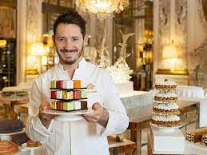
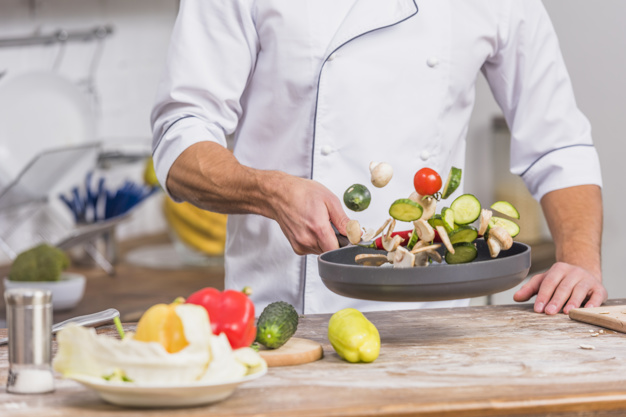

Nuestros Chefs
¡Bienvenidos a nuestro restaurante! Permítanos presentarles a nuestro increíble equipo de chefs, quienes se dedican a crear experiencias culinarias inolvidables para ustedes.
En primer lugar, tenemos al chef ejecutivo, el maestro detrás de todas las delicias gastronómicas que ofrecemos. Con su experiencia y pasión por la cocina, es capaz de combinar ingredientes de forma magistral, creando platos que son verdaderas obras de arte para el paladar.

Nuestro chef de pastelería es un artista de los postres. Sus creaciones son una mezcla perfecta de sabores y texturas, y sus presentaciones siempre sorprenden. Desde pasteles elaborados hasta postres más ligeros, cada bocado es una experiencia dulce y exquisita.

Y finalmente, pero no menos importante, nuestro chef de cocina saludable se especializa en crear platos nutritivos y equilibrados sin comprometer el sabor. Sus creaciones son una delicia para aquellos que buscan opciones más saludables sin renunciar al placer de una buena comida.
